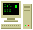

|
 Ya estamos en la Autopista de la Información. Desde nuestra nueva Página Web podrá consultar todos nuestros precios sin moverse de su casa (siempre que tenga un módem, claro).En Sr. Robot montamos su ordenador a medida, pieza a pieza, y se lo entregamos con el MS-DOS y el Windows instalados y listo para funcionar. ¡Y si no sabe qué es un IRQ, no se preocupe: nosotros se lo configuramos! Todos nuestros equipos tienen 1 año de garantía en piezas y mano de obra. |
| NOVEDADES | |
|---|---|
| ¡Ya está aquí Windows 95! Salió el 24 de agosto y ya lo tenemos en CD-ROM y en disquetes. Si su ordenador es un 386, venga a vernos antes de instalarlo... Más información | |
| Pentium a 133 MHz. El procesador más rápido del mundo, en nuestro escaparate. Y tranquilo: todos nuestros Pentium están libres del fallo de la división. Ver equipos | |
| Unidades Iomega Zip de 100 MB. ¡Lo que caben 70 disquetes en un solo cartucho! Ver precio | |
| ¡Muy pronto, InfoVía! Telefónica pondrá en marcha este mes un acceso a Internet desde toda España a precio de llamada local. Pregúntenos por nuestros módems de 28.800 bps. | |
Usted es el visitante número
¡Firme en nuestro libro de visitas! |
Web ficticia de homenaje a las páginas de los años 90. Sr. Robot Informática no existe. Las marcas citadas pertenecen a sus propietarios y los precios son aproximados de la época.